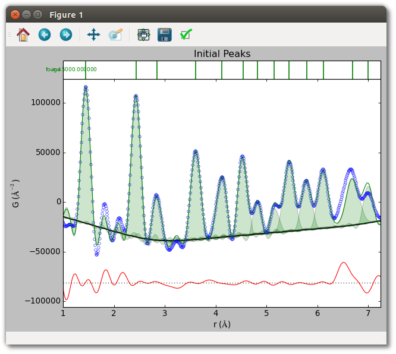
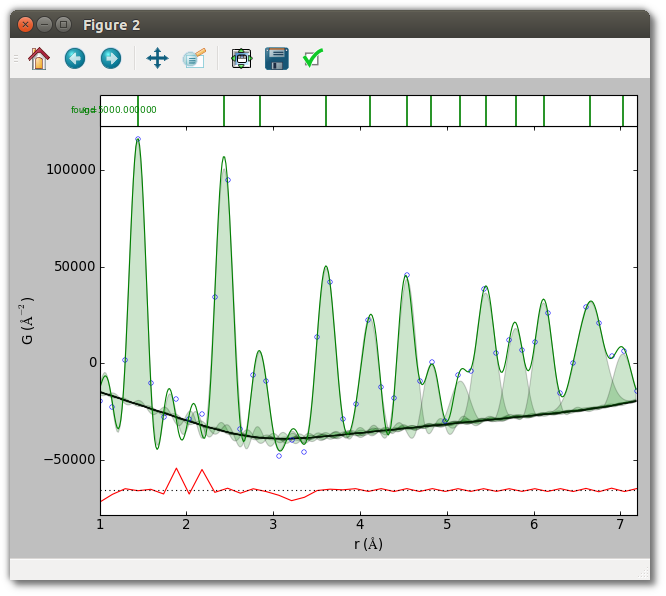

Peak fitting
This example demonstrates peak fitting with a set of initial peaks on a C60
nanoparticle PDF with unreliable uncertainties. An interpolated baseline is
created from a list of (r, G(r)) pairs contained in a file. Note that the
command-line tool srmise does not currently support peak fitting.
The initial peaks are specified as in the previous example, by giving an approximate list of peak positions to an estimation routine, or manually specifying peak parameters. Peak fitting never alters the peak function, so termination effects are explicitly added to an existing peak function with the following pattern.
from diffpy.srmise.peaks import TerminationRipples
...
# Return new peak function instance which adds termination effects to
# existing peak function instance "base_pf" with maximum momentum transfer
# "qmax".
pf = TerminationRipples(base_pf, qmax)
The initial peaks used in this fit are shown below. The last two peaks use manually specified parameters. Note that this PDF is unnormalized, so the scale of the y-axis is arbitrary.

By default, peak fitting occurs on a Nyquist-sampled grid when Qmax > 0. To fit a finely-sampled PDF without resampling set “nyquist” to False.
Run the script to see the results of the fit.
python fit_initial.py

Script (fit_initial.py)
#!/usr/bin/env python
##############################################################################
#
# diffpy.srmise by Luke Granlund
# (c) 2015 trustees of the Michigan State University.
# All rights reserved.
#
# File coded by: Luke Granlund
#
# See LICENSE.txt for license information.
#
##############################################################################
"""Example of peak fitting C60 PDF (unnormalized) with unreliable uncertainties.
Peak fitting in SrMise means fitting a model of initial peaks, which may be
specified manually or estimated with a clustering-based convenience function,
just as with specifying initial peaks for peak extraction. Unlike peak
extraction, it does not attempt to add or remove peaks, apply termination
ripples, or otherwise do anything beyond chi-square fitting using the specified
grid."""
import matplotlib.pyplot as plt
from diffpy.srmise.applications.plot import makeplot
from diffpy.srmise.baselines.fromsequence import FromSequence
from diffpy.srmise.pdfpeakextraction import PDFPeakExtraction
from diffpy.srmise.peaks.base import Peaks
from diffpy.srmise.peaks.terminationripples import TerminationRipples
def run(plot=True):
# Initialize peak extraction
ppe = PDFPeakExtraction()
ppe.loadpdf("data/C60_fine_qmax21.gr")
# Set up interpolated baseline.
# The FromSequence baseline creates an interpolated baseline from provided
# r and G(r) values, either two lists or a file containing (r, G(r)) pairs.
# The baseline has no parameters. This particular baseline was estimated
# by fitting interparticle correlations of an FCC lattice of hollow
# spheres to the PDF.
blf = FromSequence("data/C60baseline.dat")
bl = blf.actualize([])
# Set up fitting parameters
# A summary of how parameters impact fitting is given below.
# "rng" - Same as peak extraction
# "baseline" - Same as peak extraction
# "qmax" and "nyquist" - If qmax > 0 and Nyquist is true, fitting is
# performed on a Nyquist-sampled grid. The data are
# never supersampled first.
# "dg" - Since the model to fit is prespecified, the uncertainty does not
# impact model complexity. Impact on refined parameter values and
# estimated uncertainties as per standard chi-square fitting.
# "pf" - The peak function used when estimating peak parameters given an
# approximate position. Unike peak extraction, peak fitting never
# alters the peak function used by initial peaks.
# "cres" - Estimation of peak parameters given an approximate position uses
# clustering for peak finding. No other effect on peak fitting.
# "supersample" - No effect.
kwds = {}
kwds["rng"] = [1.0, 7.25]
kwds["baseline"] = bl
kwds["cres"] = 0.05
kwds["dg"] = 5000 # ad hoc, but gives each point equal weight in fit.
ppe.setvars(**kwds)
# Set up termination ripples
# Peak fitting never changes the peak function, so termination ripples
# are not applied automatically as they are in peak extraction.
# Termination ripples require setting the underlying peak function and qmax.
# In this case they ared added to the default GaussianOverR peak function.
# TerminationRipples use the estimation methods of the base peak function.
pf = TerminationRipples(ppe.pf[0], ppe.qmax)
ppe.setvars(pf=[pf])
# Specify some initial peaks using approximate positions. These use the
# peak function passed to PDFPeakExtraction instance.
rough_guess = [1.4, 2.4, 2.8, 3.6, 4.1, 4.5, 4.8, 5.2, 5.4, 5.7, 6.1]
for g in rough_guess:
ppe.estimate_peak(g)
# Specify some peaks explicitly. These may be constructed from any peak
# function, or combination of peak functions.
explicit_guess = [[6.7, 0.3, 100000], [7.0, 0.15, 50000]]
explicit_peaks = Peaks([pf.actualize(eg, in_format="pwa") for eg in explicit_guess])
ppe.add_peaks(explicit_peaks)
# Plot initial peaks
if plot:
makeplot(ppe)
plt.title("Initial Peaks")
# Perform fit.
ppe.fit()
# Save results
ppe.write("output/fit_initial.srmise")
ppe.writepwa("output/fit_initial.pwa")
if plot:
plt.figure()
makeplot(ppe)
plt.show()
if __name__ == "__main__":
run()